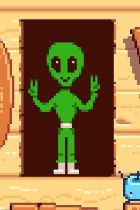

1. OVNI no Céu Noturno
Em algumas noites, é possível ver um OVNI cruzando o céu rapidamente. É raro, mas aparece como um pequeno ponto brilhante em movimento com um som sutil. Essa aparição reforça a presença de elementos sobrenaturais no jogo. Ninguém sabe ao certo o que ele significa — só que não estamos sozinhos.
